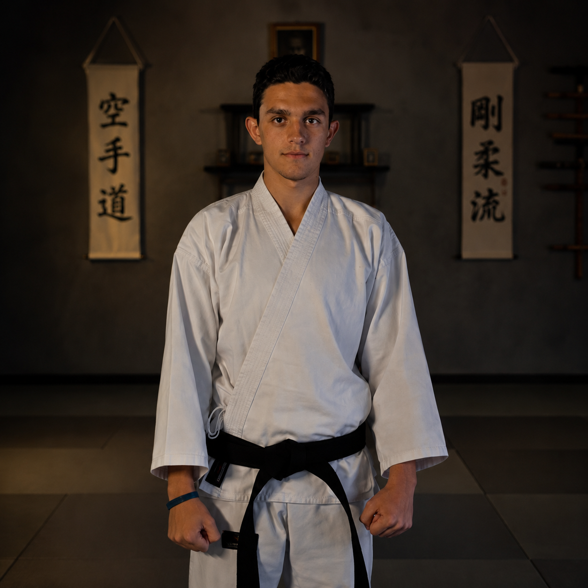
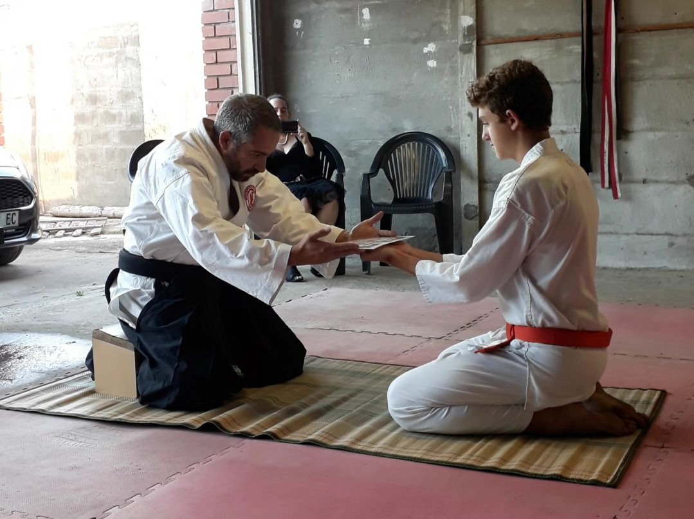
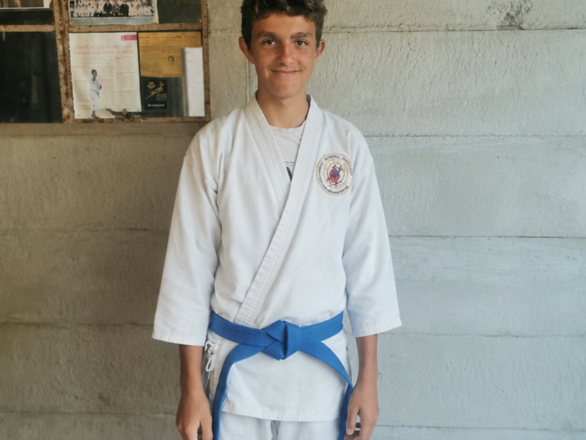
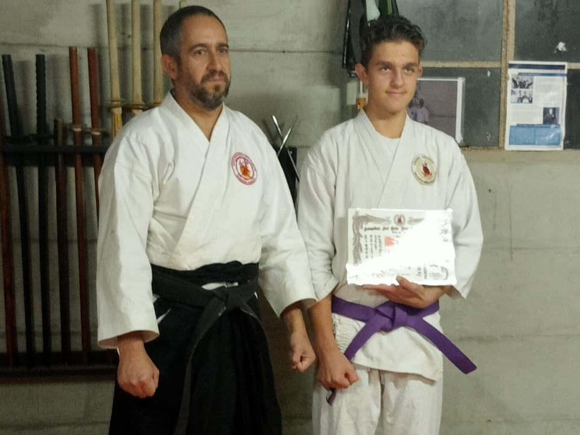
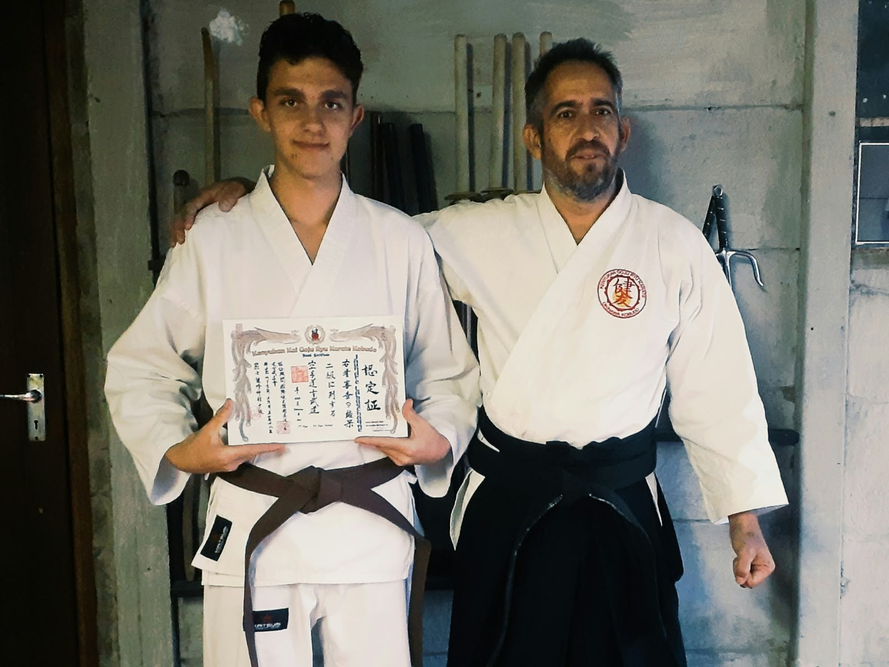
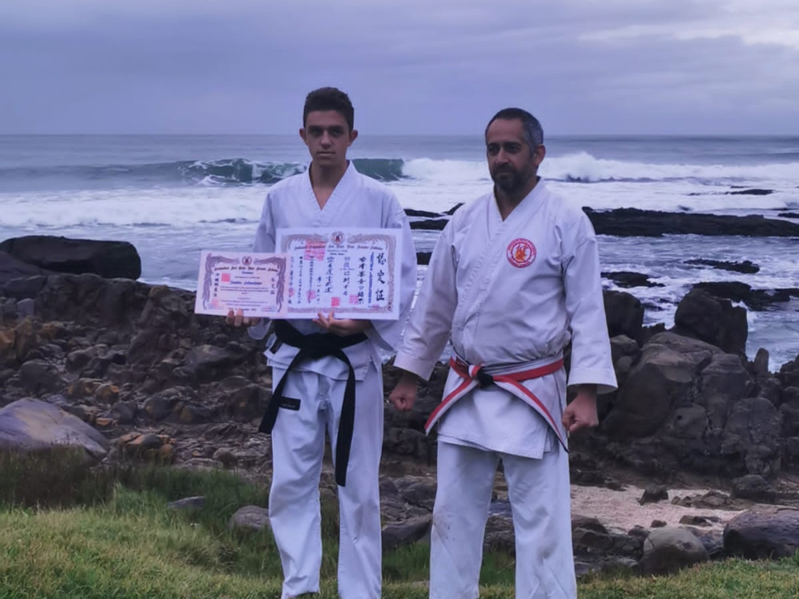

About Me & Personal Journey
Sempai Jaundre Labuschagne — 1st Dan Okinawan Goju-Ryu Karate

About Me
My name is Sempai Jaundre Labuschagne, a 1st Dan Black Belt in Okinawan Goju-Ryu Karate, Senior Instructor within the Kokusai Kenyukan Kai Okinawa Goju-Ryu Karate/Kobudo tradition, and Head Instructor of Ryven Goju Dojo.
My martial arts journey began in April 2020 in Kayser’s Beach under the guidance of Sensei Morne Slabbert-Renshi, a 5th Dan Goju-Ryu Karate practitioner. Since then, my journey has been shaped by the core principles of discipline, consistency, respect, perseverance, and continuous self-improvement. Through years of dedicated training, karate has become more than a martial art—it has been a foundation for personal development. It has strengthened my confidence, self-control, situational awareness, and ability to remain calm and composed under pressure. Every challenge , grading, and training session has contributed to my growth both as a martial artist and as an individual.
My Approach to Goju-Ryu
I believe Goju-Ryu should be trained with both discipline and understanding. Kihon, Kata, Kumite, breathing, conditioning, balance, timing, distance, and practical application all form important parts of my training.
Alongside technical ability, I place great importance on the traditional values of respect, humility, patience, responsibility, and perseverance.
Teaching at Ryven Goju Dojo
As Head Instructor, my goal is to provide a structured environment where students can develop while maintaining the standards and traditions of Okinawan Goju-Ryu.
Every student develops differently, so I believe in combining traditional standards with individual attention and continuous improvement.
Beyond the Dojo
My background in first aid and emergency response has strengthened many of the qualities I have developed through karate, particularly remaining calm, thinking logically, adapting to situations, and making decisions under pressure.
I believe strength should be accompanied by responsibility, knowledge by humility, and confidence by self-control.
My Personal Journey
My journey through Goju-Ryu has been shaped by years of training, correction, repetition, grading, and personal development. Achieving 1st Dan was an important milestone, but I see Shodan as the beginning of a deeper stage of learning and responsibility.
The journey continues through training, teaching, refining my technique, understanding the principles of Goju-Ryu, and passing knowledge on to the next generation.
My Grading Journey
Each grading represents another stage of my development as a martial artist. These photographs document important milestones along my journey from White belt to Shodan.





My Goal
My goal as an instructor is to develop disciplined, respectful, and technically capable martial artists who carry the principles of karate beyond the dojo.
Achieving 1st Dan is not the end of my journey. It is the beginning of a new stage of learning, teaching, and responsibility.
Train with discipline. Move with purpose. Remain humble. Never stop learning.